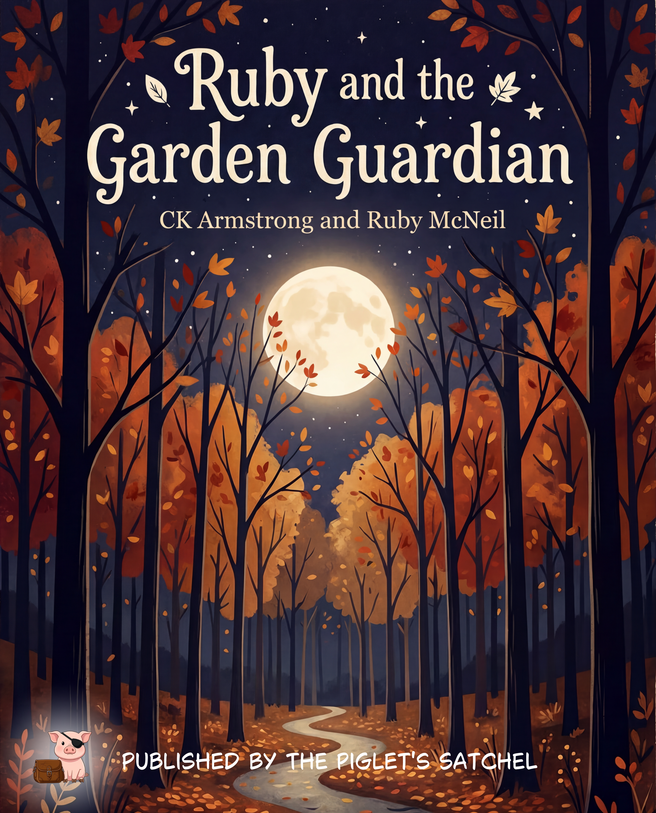
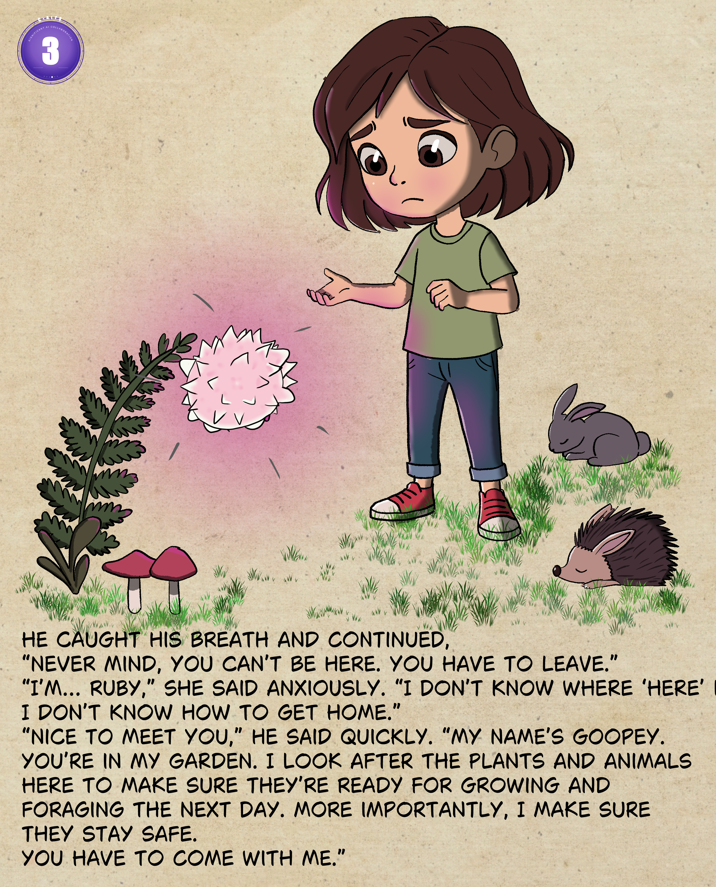
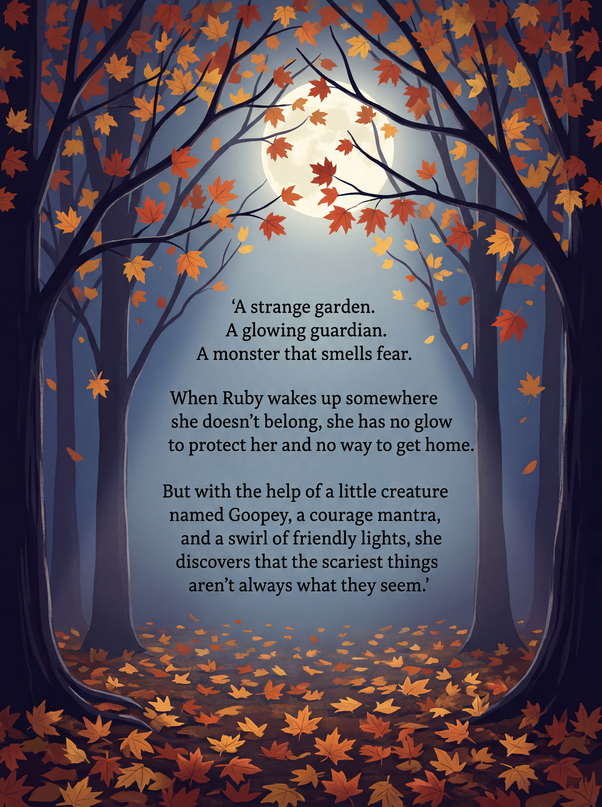

Ruby and the Garden Guardian
A children's picture book about courage, curiosity, and the magic hiding in your own back garden.
This book came from exploring a story together with my daughter on a family walk one evening. We made the characters on paper and named them. Having just finished the first draft of the Second Edge Blades novel, I thought I would try my hand at turning our fun creative exercise into a proper book. This is the result.



Status
Available now. ISBN 9798261040224.
Transparency Ratings
Rated per component using the C-AITS scale.
 Story / Text
Level 0 — The Soul
Story / Text
Level 0 — The Soul
 Illustrations
Level 3 — Assisted
Illustrations
Level 3 — Assisted